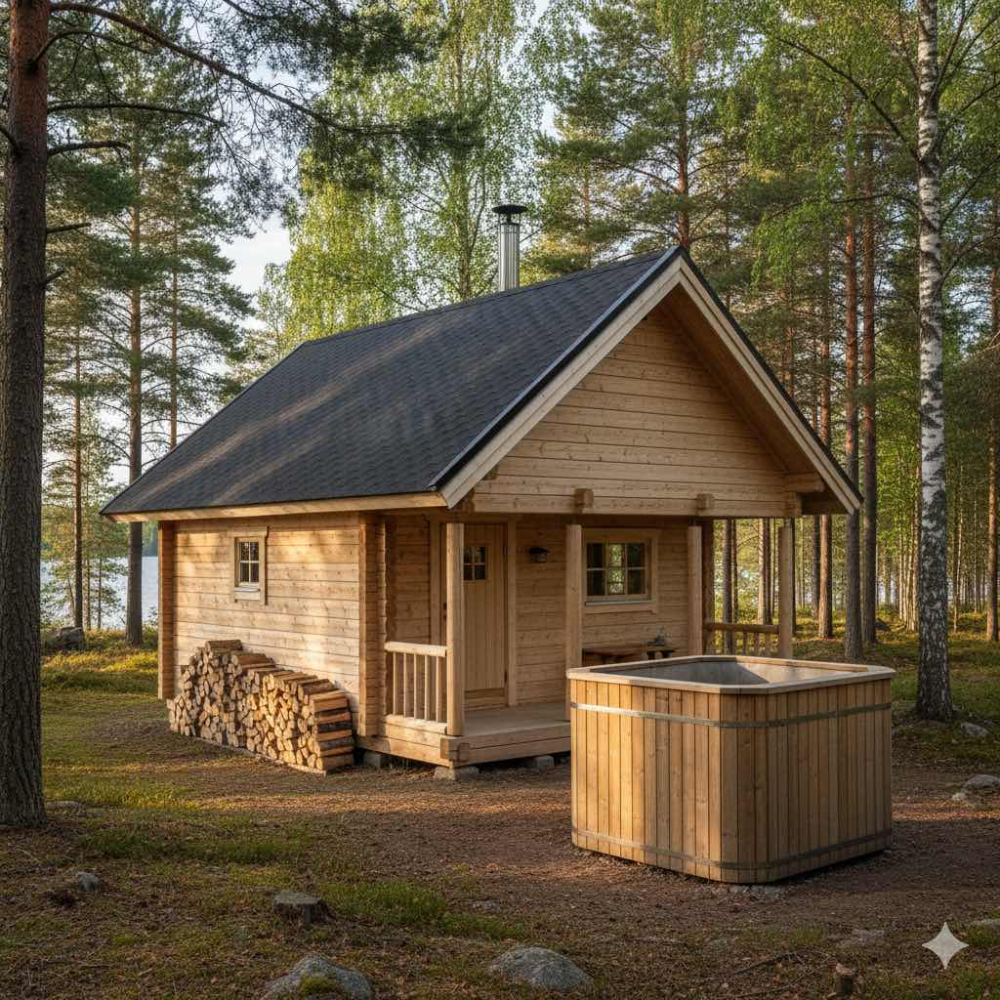

Piharakennukset
Suunnittelemme ja rakennamme piharakennukset pihapiiriin sopiviksi koko Pohjois-Karjalan alueella.
Piharakennusten suunnittelu ja rakentaminen

Suunnittelemme piharakennukset tontin ja toiveiden mukaan: huomioimme näkymät, tuulisuunnan ja saavutettavuuden. Käytämme paikallisia materiaaleja ja teemme ratkaisut, jotka kestävät Pohjois‑Karjalan sääolosuhteet.
Tyypillisiä kohteita ovat pihasaunat, varastot/puuvajat, vierasmajat sekä modernit vierasmajat, joihin voidaan yhdistää pukuhuone ja puuvaja kokonaisratkaisuksi.
Mitä ulkorakennukset sisältävät
Tyypit
Saunat, pihasaunat, varastot ja puuvajat, vierasmajat, modernit vierasmajat ja pienet piharakennukset kuten leikkimökit.
Mittatilaus ja materiaalit
Suunnittelemme kohteeseen sopivan ratkaisun puusta, kelohirrestä tai komposiitista; huomioimme eristyksen ja huollettavuuden.
Toteutusprosessi
Kartoitus → suunnittelu → mittatilausvalmistus → rakentaminen ja viimeistely. Yhteydenotto ja tarjous tehdään nopeasti alueella Joensuu & Pohjois‑Karjala.
Lisäpalvelut
Terassiyhteydet, pukuhuoneet, puuvajat, valaistus ja lasitus sovitaan osana toimitusta.
Lisätietoja piharakennuksista
Piharakennus kannattaa mitoittaa käyttötarkoituksen mukaan jo ensivaiheessa: varasto, pihasauna ja vierasmaja vaativat eri ilmanvaihto-, eristys- ja lämmitysratkaisut. Kaikissa kohteissa huomioimme usein myös sähkövaraukset, valaistuksen ja talvikäytön tarpeet, jotta tila palvelee arkea ympäri vuoden eikä vain kesäkaudella.
Pohjois-Karjalan tonttiolosuhteissa rakennuksen sijoittelu, rajaetäisyydet ja mahdolliset lupakäytännöt vaikuttavat suoraan toteutukseen. Kaikissa toteutuksissa painottuvat maaston muodot, huoltoyhteydet ja kulkureitit pihassa. Yhteydenoton jälkeen käymme kohteen läpi paikan päällä, ehdotamme toimivaa mallia ja laadimme selkeän kustannus- ja toteutussuunnitelman.
Kuvagalleria
Pihasauna Joensuu
Mittatilauspihasauna suunniteltuna Joensuun ja Pohjois‑Karjalan pihatiloihin.
Kysy piharakennuksesta tai pihasaunasta
Autamme valitsemaan kohteeseesi sopivan ratkaisun.
Ota yhteyttä